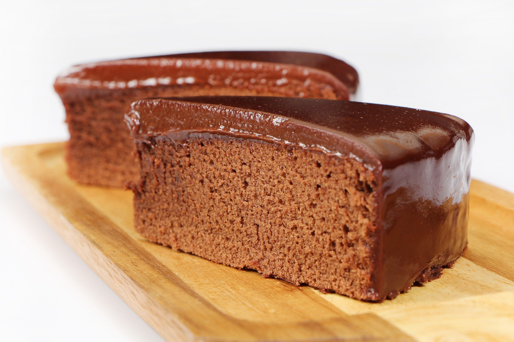

Receita de Bolo de Chocolate

Massa
- 4 ovos
- 1 Xícara de Açúcar
- 1/2 Xícara de Óleo de Soja
- 1 Xícara de Água Morna
- 2 Xícaras de Farinha de Trigo
- 1 Xícara de Chocolate em Pó ou Cacau 70%
- 1 Colher de Fermento em Pó
Calda
- 8 colheres de Chocolate em Pó ou cacau 70%
- 4 colheres de Margarina
- 1 lata de Leite Condensado
Massa
- Bata as claras em neve e separe
- Em outra vasilha bata as gemas com açúcar
- Em seguida, acrescente a água morna, o chocolate e o óleo, misture
- Acrescente a farinha de trigo e bata na batedeira em velocidade alta por 3 minutos
- Acrescente o fermento e mexa aos poucos
- Acrescente a clara em neve e mexa até ficar totalmente envolvida na massa
- Asse em forno a 180 graus por 50 minutos
Calda
- Para a calda misture a margarina com o chocolate/cacau e leite condensado
- Cozinhe por 3 minutos
- Desligue e jogue imediatamente no bolo